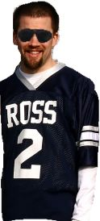
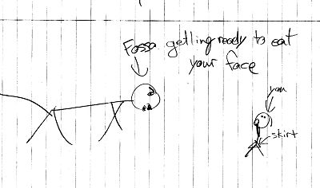
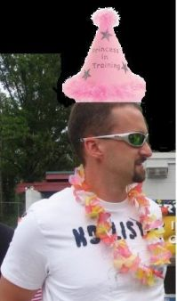
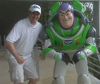
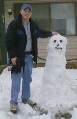

Breaking News from the Players
and their Agents
Cork Bowl 19
|
Henney
Busts Out A Cork Bowl Shuffle
October 22nd - In the weeks leading
up to Cork Bowl 19, first-year quarterback Jeff Henney
of the Capybaras greeted the media with his version of the Cork Bowl Shuffle:
"I'm the punky QB known as the
Hen,
When I hit the turf, I aint got no plan.
I just throw my body all over the field-
I can't dance, but I can throw the pill.
I didn't come here looking for trouble,
I just came here to do the Cork Bowl Shuffle."
--Jeff Henney
|
 |
Back to top
Random Ramblings
from Around the League
November 5th - Following are some
recent ramblings from players from around the league:
"I can personally guarantee you
that I will at least double Tomlinson's catches and yards. I have a six
pack." - Evan Woodard

Also Woodard apparently
was responsible for vandalizing Patrick Cork's truck by placing a hand-drawn
picture under the windshield. According to Cork, "I thought the picture
was
something
Caleb drew, but then I realized it was from Evan. Seriously, this looks
like something a 4-year old drew. I'm embarrased for Evan."
Patrick Cork had this message for Brooks
Wilson: "Wilson has been cruisin' for a bruisin' for the past ten years.
And now I'm his cruise director. And my name is Captain Bruisin."
"I've never had much success
with a Truitt as my quarterback, so hopefully with Henney as my QB I'll
see a lot of balls.....footballs that is." -- Greg Howard.
"The Capybaras are very confident about this year's Cork Bowl. Even
more so considering how seriously Brooks Wilson is, or rather isn't, taking
his preparation as you can see by this photo we found." -- Chris Cork
Back to top
Rick Reilly Interview
with Ryan Tomlinson - Part 1
November 7th - Note: This is the first
installment of 20 of an interview I conducted with Cork Bowl Legend, Chair
Baseball Super Star, All around good looking guy, and may I add an excellent
croquet player, Ryan "Super Star" Tomlinson.
Will Ryan Tomlinson be on the field
at Corklestick Park on December 5th? The answer is a resounding- "MAYBE!"
In a press release from Tomlinson's
agent, Josh Butcher, that was released at the beginning of September it
stated that "Ryan Tomlinson has never been more excited to start working
out and getting ready for Cork Bowl season then he is right now." Tomlinson,
or R.T. as he is known around the league seems to be changing his tune.
"After a rigorously working out
for 7 days straight in September, I have concluded that I will never be
in shape again in my life," commented a relaxed Ryan Tomlinson as he
lay on his couch, eating cookies and milk. "This remote isn't working
and Ellen comes on in five minutes, how am I going to see her dance now,
and George Clooney is FINALLY going to be on today." added a disgusted
Ryan. After I volunteered to get up and change the channel for him he agreed
to keep talking, but only while Ellen was at commercial.
Tomlinson however has offered some
alternatives if he will not be on the field. "Right now I think the
best idea is to just let Greg Howard cover two players and let me cheer
from the sidelines. I read on his facebook status that he was doing 200's
the other day? Really?? I mean if he can run a marathon, swim two miles,
and bike 100 miles and wants to do 200's a month later, why can't he cover
two guys in Cork Bowl?" said a drowsy Tomlinson who then took a quick
cat nap between questions.
With the release of several authorized
and unauthorized biographies set to release on the 4th of December to celebrate
the return of Tomlinson to the field I thought that I should wake him and
return to the interview. After waking R.T. from his nap he grouchly asked
for his juice box, and continued the the interview. I asked Ryan if he would
like to expound on Chapter two of his new biography "From Small Town
Hero, to the Countries Hero: Life On and Off the Cork Bowl Field"...
"Chapter two is really one of my favorites, basically I get to talk
about my heroes, such as the late great Kirby "The Flat Rock Rocket"
Newell, John Tesh and Mary Hart, the early years of course, and Chris Cork.
Talking about Chris Cork he added, "Obviously I'm excited to play with
6 7/8 this year. It's hard not to appreciate the way he makes you think.
I may not agree with his decision to be a Raiders fan, but he did vote for
Bob Dole in '96 and that took guts." Said an almost excited Tomlinson,
"Oh yeah Kirby Newell isn't dead, I just haven't talked to him in a
long time, so I worry."
In tomorrow's segment we will discuss
the darker side of Ryan Tomlinson, the alleged ferret fighting, the cough
syrup year, and the questionable internet pictures with Billy Ray Cyrus.
Here's a sneak peak on what Tomlinson
has to say on the questionable pictures with Billy Ray Cyrus:
"They told me the pictures would
be tasteful, but when they brought out the mullet wigs and tight pants I
should have walked"
- By Rick Reilly
Back to top
Rick Reilly Interview
with Ryan Tomlinson - Part 2
November 9th - This is the 2nd of
20 installments of an interview conducted with Cork Bowl Legend, International
Lawn Dart Champion seven years running, and number two on Peoples Most Beautiful
People list behind Kevin Ryan for two years- Ryan IDon'tNeedANumberForMyLastName
I decided that it was time to delve
into what has been called a 'dark past' for Ryan Tomlinson. I started by
asking him about the alleged ferret fighting incident that supposedly sidelined
him for the past two years. "In June of 2007 I bought about 20 ferrets
as an early Christmas present for my little nephew Jimmy, In early July
I was questioned by the police for having a broken tail light, at the end
of July I moved to Florida. The move to Florida has nothing to do with my
sweet nephew and his love for ferret or the fact that I had a broken tail
light." Commented a somewhat emotionless Tomlinson, "I simply
had an offer from the Sunshine League in Florida. What it says in my unauthorized
biography, Ryan Tomlinson: The Real Story: Ferrets Beware: Hooked on Cough
Syrup: Billy Ray Cyrus's Lover, simply is not true."
I then moved on to the accusations
that Tomlinson had been addicted to cough syrup while in Florida because
he 'couldn't handle the pressures of the Sunshine League.' "I had a
cold, a REALLY bad cold, so I had to buy a LOT of cough syrup. I obviously
needed help getting rid of the cold. So I went to a great doctor who told
me that rehab centers weren't just to help people get off drugs but also
to help people get over colds. Who knew? So I checked into a rehab center
and got rid of the cold, there was obviously no addiction."
Finally, it was time to move on to
the real hard question and the one that everyone was dieing to know. What
was Ryan's relationship with Billy Ray Cyrus, and what about the questionable
internet pictures? "Billy and I did a duet album together and everything
was going fine until the end. I had a hard time dealing with it, I left
some nasty voice messages on his phone, I might have broken his windshield,
but these are all things that happen after you make duet albums with someone
as super awesome as Billy." Commented a crying Tomlinson. "As
for the pictures, they were to promote the album and we made some mistakes,
the mullet wigs were to much and the tight pants didn't help."
Tomorrow we move onto the lighter
side of Tomlinson and his teammates as we're joined by the team and discuss
the new cookbook, Cooking with the Capybaras that is set to be released
on December 3rd. Here's a sneak peak of the interview:
"We have a great team that loves
to cooks, Greg and Patrick do the prep work in the kitchen, Chris and I
do all of the sauteing and cooking, and Jeff and Kevin love to do plate
presentation, and of course we all love to eat!"
- By Rick Reilly
Back to top
Rick Reilly Interview
with Ryan Tomlinson - Part 3
November 11th - Fossas, An Ugly Squirrel
on the Face of Cork Bowl
Note: This is the 3rd installment
of a 20 part series focusing on the Cork Bowl Legend, Photographer to the
Stars, and Licensed D.D.S (License pending further review of an incident
in Hawaii) Ryan "We'll Win it All in Six Games" Tomlinson
Today I sat down with Ryan Tomlinson
and wanted to get to the heart of what he thought of the opposing team,
The Fossas. Here is the coversation:
Q: In Capter 20 of your new autobiography
"From Small Town Hero, to the Countries Hero: Life On and Off the Cork
Bowl Field" you talk about how after your loss in Cork Bowl 8 Willy
Truitt made it known that throughout the league that he didn't want you
on his team for future Cork Bowls, how did that make you feel?
A: It hurt a lot, I was just a kid
back then and I obviously looked up to the older Cork Bowl Veteran and hoped
that we would have an illustrious career together. We have reunited for
several wins over the years, but we've never fully recovered after him talking
behind my back. Looking around the NFL I see the older veteran Brett Favre
taking his young and sensitive receiver Percy Harvin under his wing. I've
talked to Brett about being sure to not break Percy's heart like Willy broke
mine. The sting will last forever...
Q: Brooks Wilson, if you could compare
him to a book, what book would he be?
A: Wow Rick that's kind of a weird
question, but I'll answer it anyway. I would say that he is not a book at
all, he is cliff notes. With a lifetime record of 2-5 in Cork Bowl he's
all hype, you think you might learn a thing or two from him but in the end
you realize you should have just read the real book. Or in this case, studied
a real legend like Reggie Truitt.
Q: Robert Trimble, the next you?
A: Robert Trimble is a pretty boy.
The guy won the MVP on the losing team last year?? I'm going to win the
MVP on the winning team this year, no comparison. I would compare him to
Joe Namath, give him a fur coat and send him off to New York, he doesn't
fit into the midwest mentallity. The VIP party he's having the night before
Cork Bowl, cohosted by P. Diddy at the Hollywood in downtown Robinson, is
just to much. He's lost touch with the common man.
Q: Josh Williamson, class act?
A: You can't bad mouth a guy who introduced
you to Army of Darkness, "Shop smart, shop S-Mart." It'll be good
to see him.
Q: Jake Hoalt, if you could compare
him to a side dish what would it be?
A: Good question, side dishes don't
get discussed enough in a sports setting. I would have to say candied yams.
The yam is a very nutrious food, however after you candy it and take out
all of the vitamins you're left with ZERO nutritional value, much like Jake's
stat lines, a lot of zeroes.
Q:Evan Woodard, Hall of Fame camera
man, first ballot?
A Well hold on there Rick, lets not
send him to the Hall of Fame until he's finished his carreer. For one I'm
very excited to see what he can bring to the booth this year. I heard he
has been experimenting with some new camera angles, very exciting.
In the 4th installment we will discuss
with Ryan his love of sabermetrics and how he will be using them in Cork
Bowl.
- By Rick Reilly
Back to top
Chris Cork
Responds to The Scoop's Taunts
November 18th - Scoop is right about
one thing. It is time someone finally said it. Scoop has gone from eccentric
and bizarrely entertaining to completely irrelevant. He said himself that
he doesn't know who the players are. Its probably best that he won't be
showing up at Cork Bowl this year. CB doesn't need its own version of Dick
Enberg. Frankly the only way scoop would identify ANY of the players correctly
is because some of them actually have been playing forever. His references
to Justin Burtch and Jimmie Pinkstaff would only confuse the audience who
actually knows the current players. He is also wrong about my decline. I
haven't declined since I had mono and lost 15 pounds. Its been nothing but
increases since. Scoop it is time to call Bud Collins and plan a trip to
Wimbledon.
Chris Cork
Back to top
Trimble Sends
Message to Patrick Cork Ripping the Capybaras
November 20th - Based off my performance
last year, I heard a rumor that my hands were amended into the law against
carrying concealed weapons. And that only in the Southern Illinois counties...You'll
notice on game day that I won't have any pockets... now you'll know why.
The only "real" weapons
you have on your team might be Kevin, and that's only on sunny days when
the sunlight glinting off his bald head can cause blindness and mild skin
lesions.

And I personally
thought your ogreish-ly tall brother was big and buff enough... but apparently
there is some evident self-doubt going on with him. Surely being his brother,
you've seen this picture. 
Not that I have to, but if I was going
to try and imitate something, I'd at least try and make it something intimidating
and impressive. Kinda like this guy...
Oh, and please note that I'm talking
about the snowman. 'Linson is going to be lucky if he can even find the
field, much less help your team out any.
Regardless, at least you have Howard
and Henney. But then again, I don't like the chances of Howard having a
good year. I'd rather bet on a camel race in Pakistan, on a jockey I know
NOTHING about, than put money on Greg having a consistent performance. Unless
that performance is a horrible one, then I'd have to reconsider my wager.
So let's break it down. The Capybaras
(which I think is a large terrestrial kingfisher native to Australia and
New Zealand; wasn't there a childhood song made about them?) have a quarterback,
and you. And judging by the amount of mini-corks you've been putting out
lately, I'm betting you're going to be out of the game for diaper changes
more than you'll be playing.
Overall, I don't know who decided
the teams this year, but I DO know that I can't wait to tear into the Capybaras
on race day.
Robert Trimble
Back to top
Patrick Cork Confident Despite 18 Years of Wear and Tear
November 30th - Let's face the facts - 18 years is way too long to be playing this game. My best days are behind me - far behind me. But that's been the case for at least 5 years. I can't imagine game #19 is going to be any different, but I have no doubt in my teammates to help lead us to another championship. This team is full of winners - in fact, the three winningest players in the game (me, Chris and Greg). On the other hand, the Fossas have perennial losers like Brooks Wilson (2-5 career record) and Jake Hoalt (1-4). I don't care that the matchups show we are older and slower. We were last year too, and we found a way to win. That's what winners do. Brooks doesn't know what that means, but our team does. Despite being on the decline for the past half-decade, I expect to put up big numbers once again. If history is any indicator, I'll be robbed of another MVP award in the process. No offense to Trimble, but his team lost the game last year AND I outperformed him. I don't think there's much doubt that the results will be the same this year - not only will we win, but I'll STILL outperform the young floppy-haired kid. He may be bigger and faster, but I'm a cagey veteran and you can't put a number on that.
As for the Capybaras, research shows me that the capybara is the "largest gnawing animal in the world." I can't think of a better word to describe what our offense will do to the Fossas on Saturday. We will gnaw them into submission. Also known as the "water hogs", a sloppy, wet field won't slow us down either. Henney has been throwing lasers in practice and the Fossas have no idea what they are getting into when we pull out the "water hog" package. I wish the Fossas the best of luck and hope they can keep it close. And the most exciting thing about this game will be Tomlinson's return. There is nobody more excited than me to see this guy back on the field where he belongs. I'm anticipating a similar performance to his rookie campaign when he hauled in 11 passes. He's well rested and has had a lot of time to mentally prepare, and we all know how mentally strong that guy is. Greg is primed for a huge game. He had a rough go of it last year which is all the more reason to expect huge things from this weekend. Anything less than 20 catches and 8 scores will be a shock to me.
Patrick "Ocho Siete" Cork
Back to top
Evan Woodard Rips the Capybaras
December 2nd - Memo to Patrick Cork: You keep saying that your team is loaded with seasoned veterans, but we all know that things that are seasoned get cooked. In your case, burned beyond recognition. Watch out, the E-train is a freight train. Next stop, Domination Station. I was looking though your lineup just now, and I found myself saying, "Look at that fat loser!" to every person on your team. Just thought you should know.
with all due respect,
kiss my fat, hairy buttocks
P.S. that is all.
Evan
Back to top
Greg Howard Goes on the Offensive After Fossa Smack
December 2nd - I would like to addrees some obviously stupid comments.
I received a text from Williamson the other day. In this text it stated that he was gonna kick my butt in the game this year. Then I hear that Trimble is talking crap about my consistency. Seriously? Have either one of them seen my winning record? How's that for consistency? As for performance this year, I'm confident that now I don't have a Truitt throwing me the ball, I'll be just fine.
As for "the scoop" and his hefty smurf analysis I will have to agree with Chris Cork. It's obvious that scoop is out of touch, and probably just plain nuts. Maybe he's huffed too much cow manure....
G-How
Back to top
Back to Cork Bowl